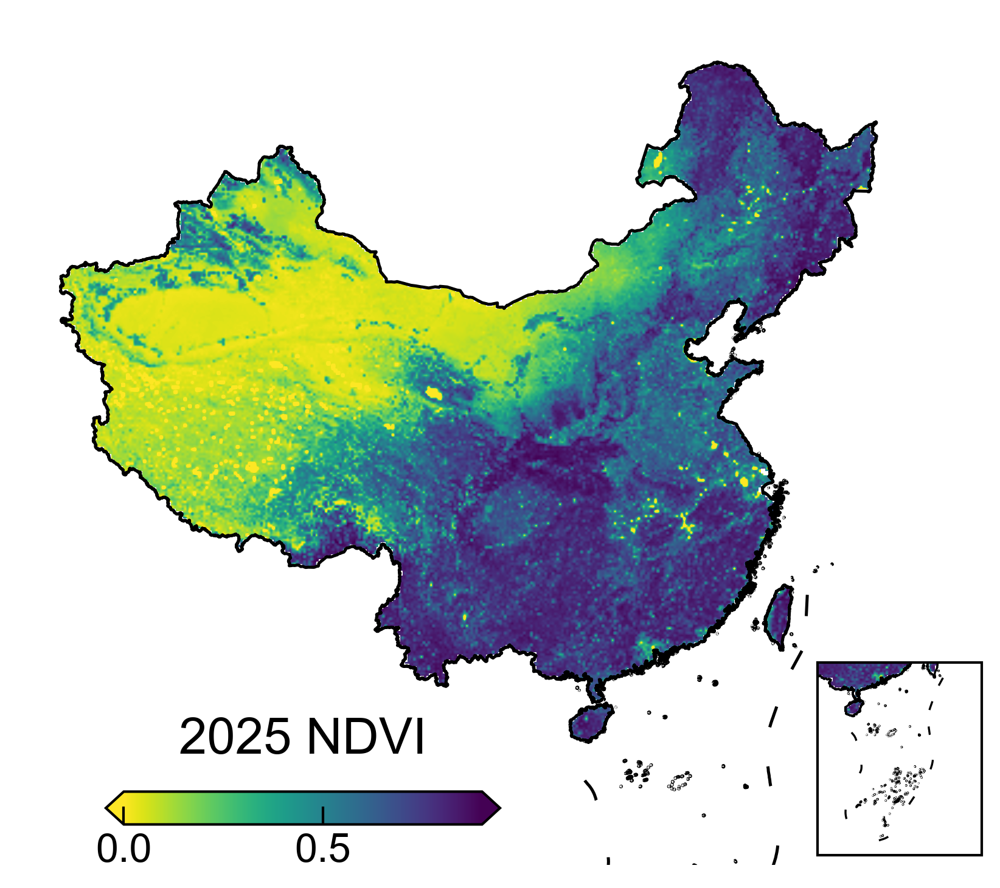
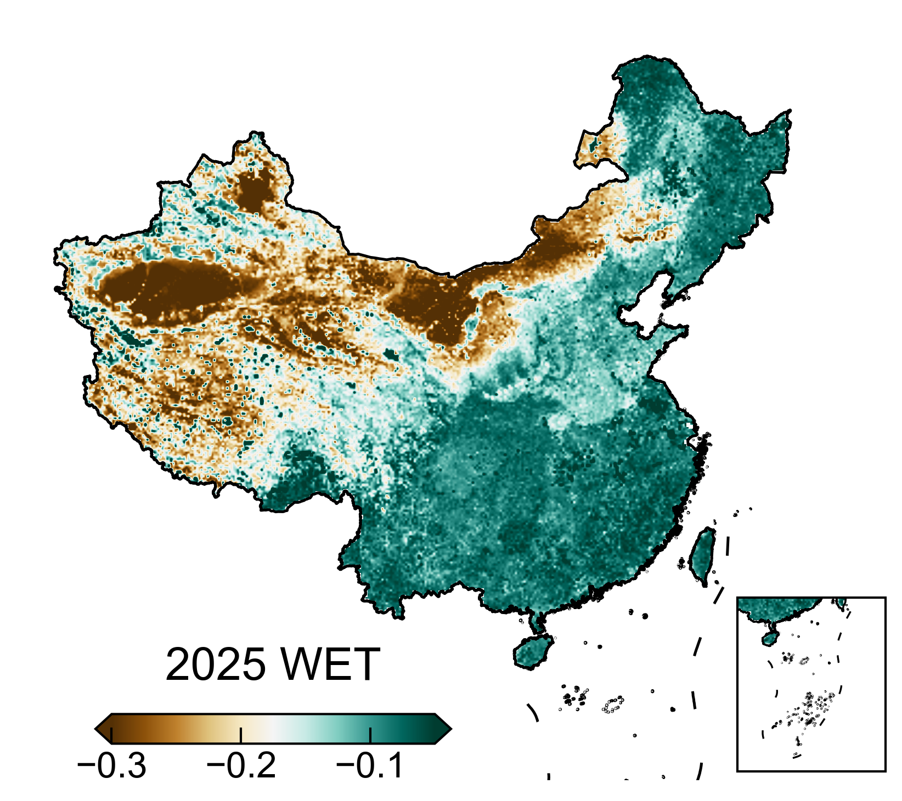
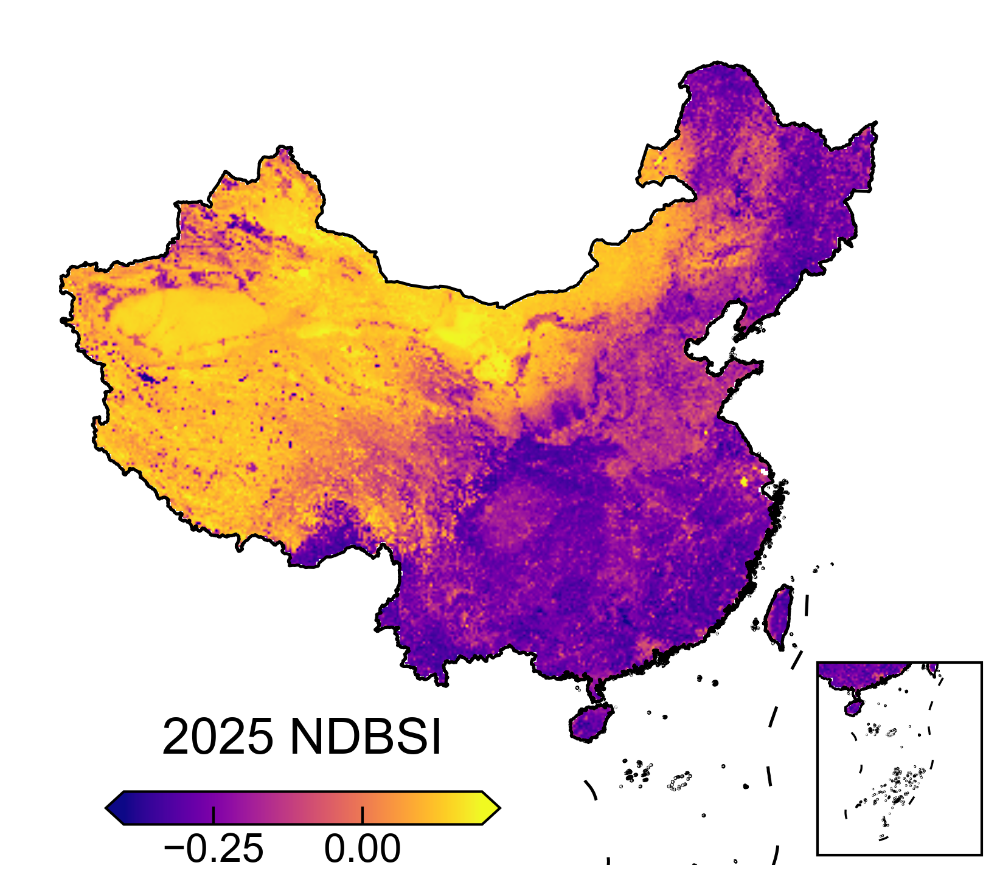

光学指标
NDVI、WET 与 NDBSI 的构建
本页概述 NDVI、WET 与 NDBSI 的构建基础与研究作用，重点说明年度无缝 Landsat 光学合成产品为何能够为长期全国尺度生态环境指标提供稳定支撑。
基础数据特征
叶盛期合成的含义
三个指标在系统中的作用
2025 年光学指标示例



光学指标
本页概述 NDVI、WET 与 NDBSI 的构建基础与研究作用，重点说明年度无缝 Landsat 光学合成产品为何能够为长期全国尺度生态环境指标提供稳定支撑。


